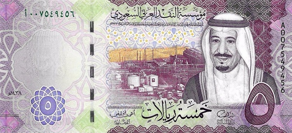
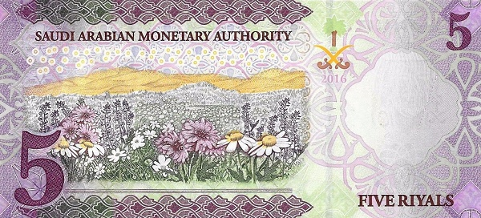
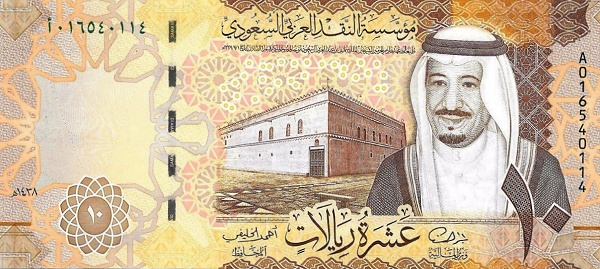
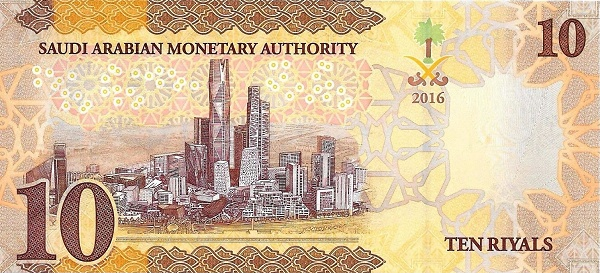
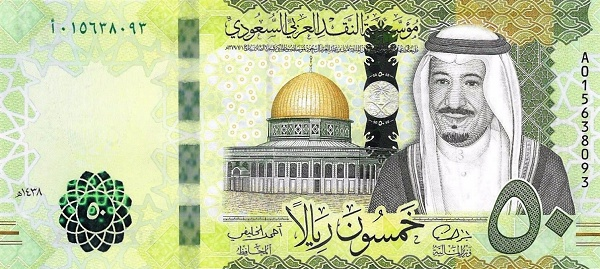
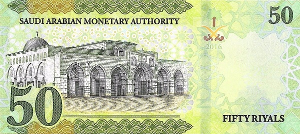
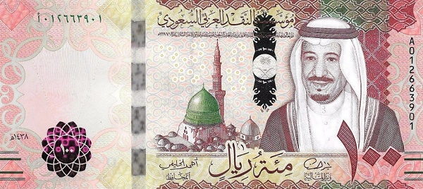
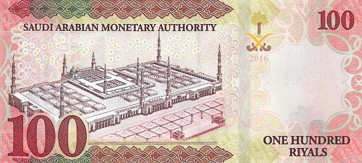
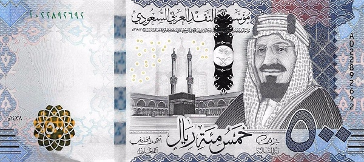
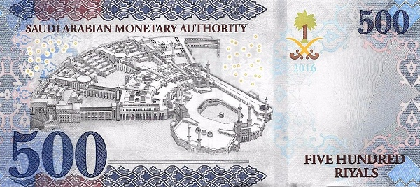

Саудовская Аравия - Риял
5 риялов
 Лицевая сторона - Нефтеперерабатывающий завод, король Салман ибн Абдулазиз аль-Сауд
Обратная сторона - цветы
10 риялов
 Лицевая сторона - Крепость, король Салман ибн Абдулазиз аль-Сауд
Обратная сторона - "SkyLine"
50 риялов
 Лицевая сторона - Купол Скалы Иерусалим, король Салман ибн Абдулазиз аль-Сауд
Обратная сторона - Мечеть Аль-Акша и Купол Скалы, Иерусалим
100 риялов
 Лицевая сторона - Мечеть Пророка (Медина), король Салман ибн Абдулазиз аль-Сауд
Обратная сторона - Мечеть Пророка (Медина)
500 риялов
 Лицевая сторона - Кааба (Мекка), король Абдулазиз ибн Сауд
Обратная сторона - Мекка